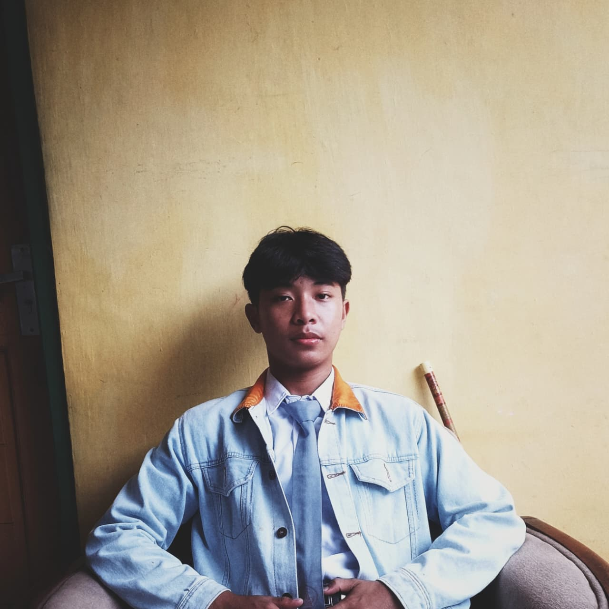

Tech Enthusiast | Organizational Activist | Adventure Seeker
Seorang pelajar di SMK Muhammadiyah Belik
Individu yang memiliki semangat tinggi dalam berpetualang, aktif berorganisasi, dan mendalami dunia teknologi. Tertarik pada bidang IT, kepemimpinan, serta pengembangan diri. Selalu terbuka terhadap tantangan dan pengalaman baru, karena saya percaya bahwa pertumbuhan dimulai dari keberanian untuk mencoba hal-hal yang belum pernah dilakukan sebelumnya.
Apa aja
One Piece
Tere Liye
Memories - Maki Otsuki
Lari pagi dan gym adalah bagian dari rutinitas harian saya untuk menjaga kesehatan tubuh dan pikiran.
Petualangan di alam bebas memberikan perspektif baru dan kenangan yang tak terlupakan. Setiap gunung punya cerita.
Buku adalah dunia tanpa batas. Terutama karya Tere Liye yang menginspirasi dan membuat saya berpikir lebih dalam.
Mengunjungi setiap benua dan mengenal budaya yang berbeda.
Membangun koleksi buku lengkap dengan ruang yang nyaman.
Tantangan untuk menaklukkan setiap gunung di Indonesia dan dunia.
Membangun usaha yang sustainable dan memberikan dampak positif.
Kesuksesan dalam setiap aspek kehidupan dan menjadi versi terbaik diri sendiri.
Pengalaman sebagai Paskibraka Kabupaten mengajarkan saya bahwa keberhasilan lahir dari disiplin, konsistensi, dan semangat pantang menyerah. Pengalaman ini menjadi fondasi kuat dalam membangun karakter kepemimpinan dan kemampuan bekerja dalam tim.
PKL di PT Jembatan Citra Nusantara (Citranet) Purwokerto menjadi langkah awal saya mengenal dunia networking secara lebih mendalam. Saya memperoleh pengalaman dalam instalasi, konfigurasi, monitoring, dan pemeliharaan jaringan, sekaligus memahami bagaimana sebuah infrastruktur jaringan dikelola untuk memberikan layanan yang stabil dan andal kepada pelanggan.
Sebagai Ketua Umum IPM, saya bertanggung jawab dalam mengarahkan jalannya organisasi, mengoordinasikan berbagai bidang, serta memastikan setiap program kerja berjalan sesuai visi dan tujuan yang telah ditetapkan. Pengalaman ini memperkuat kemampuan kepemimpinan, manajemen organisasi, dan kerja sama tim.